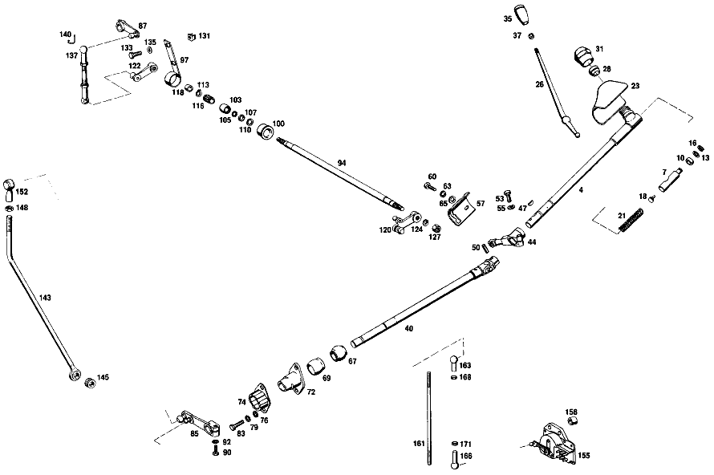

| № | Артикул | Название | Кол. | Примечание | Ограничение |
|---|---|---|---|---|---|
| 4 | A 100 260 16 82 | ТЯГА ПЕРЕКЛЮЧЕНИЯ | 1 | [002] FROM CHASSIS 001029 ALSO INSTALLED ON 000996, 001021, 001024, 001026 | |
| 7 | A 100 268 03 39 | НАПРАВЛЯЮЩ. ЦАПФА | 1 | [004] 12/52: FROM STEERING 000454; 22/62: FROM STEERING 000134 | |
| 10 | A 111 997 12 40 | Уплотнительное кольцо | 2 | ||
| 13 | A 186 990 69 40 | Диск | NB | ||
| 16 | A 186 268 02 73 | предохранитель | 1 | ||
| 18 | A 100 268 03 74 | БОЛТ | 1 | [004] 12/52: FROM STEERING 000454; 22/62: FROM STEERING 000134 | |
| 21 | A 120 993 21 01 | пружина | 1 | ||
| 23 | A 100 268 08 97 | Манжета | 1 | Рулевое управление: ВлевоАвтоматическая коробка переключения передач | |
| 26 | A 100 268 02 24 | РЫЧАГ ПЕРЕКЛЮЧЕНИЯ | - | [002] FROM CHASSIS 001029 ALSO INSTALLED ON 000996, 001021, 001024, 001026 | |
| 26 | A 100 268 04 24 | РЫЧАГ ПЕРЕКЛЮЧЕНИЯ | 1 | ||
| 28 | A 111 268 03 92 | РЕЗИНОВАЯ ПОДУШКА | 1 | ||
| 31 | A 100 268 04 57 | ПРОБКА | 1 | ||
| 35 | A 115 268 14 42 | КНОПКА | 1 | ||
| 37 | A 115 268 01 72 | ГАЙКА | 1 | ||
| 40 | A 100 260 18 82 | ТЯГА ПЕРЕКЛЮЧЕНИЯ | 1 | Рулевое управление: ВлевоАвтоматическая коробка переключения передач [002] FROM CHASSIS 001029 ALSO INSTALLED ON 000996, 001021, 001024, 001026 | |
| 44 | A 100 268 08 22 | ПОВОРОТНЫЙ РЫЧАГ | 1 | Рулевое управление: ВлевоАвтоматическая коробка переключения передач [002] FROM CHASSIS 001029 ALSO INSTALLED ON 000996, 001021, 001024, 001026 | |
| 47 | N 006888 003000 | Сегментная шпонка | 1 | ||
| 50 | N 001481 004003 | Распорный штифт | 1 | ||
| 53 | N 000933 006127 | Винт | 1 | M6X25 | |
| 55 | A 094 990 68 10 | Пружинное кольцо | 1 | ||
| 57 | A 100 268 08 47 | КУЛИСА | 1 | Рулевое управление: ВлевоАвтоматическая коробка переключения передач | |
| 60 | N 000933 006183 | БОЛТ | - | ||
| 60 | N 304017 006016 | Винт с 6-гранной головкой | 2 | M6X16 | |
| 63 | A 094 990 68 10 | Пружинное кольцо | 2 | ||
| 65 | N 000125 006421 | Шайба | 2 | ||
| 65 | N 000125 006449 | Шайба | 2 | ||
| 67 | A 100 260 03 95 | ПОДШИПНИК | 1 | ||
| 69 | A 100 268 06 35 | ПОДШИПНИК | 1 | ||
| 72 | A 100 268 05 50 | ВТУЛКА | 1 | ||
| 74 | A 100 268 02 57 | ПРОБКА | 1 | ||
| 76 | N 000125 006421 | Шайба | 2 | ||
| 76 | N 000125 006449 | Шайба | 2 | ||
| 79 | A 094 990 68 10 | Пружинное кольцо | 2 | ||
| 83 | N 000933 006130 | Винт | 2 | ||
| 85 | A 100 260 04 15 | РЫЧАГ | 1 | Рулевое управление: ВлевоАвтоматическая коробка переключения передач | |
| 87 | A 100 260 05 15 | РЫЧАГ | 1 | Рулевое управление: ВправоАвтоматическая коробка переключения передач | |
| 90 | N 000931 006016 | БОЛТ | 1 | ||
| 92 | A 094 990 68 10 | Пружинное кольцо | 1 | ||
| 94 | A 100 268 00 32 | ВАЛ | 1 | Рулевое управление: ВправоАвтоматическая коробка переключения передач | |
| 97 | A 100 260 05 95 | ПОДШИПНИК | 1 | СПРАВА Рулевое управление: ВправоАвтоматическая коробка переключения передач | |
| 100 | A 111 268 00 86 | Резиновое кольцо | 2 | Рулевое управление: ВправоАвтоматическая коробка переключения передач | |
| 103 | A 111 991 00 29 | Шар | 2 | Рулевое управление: ВправоАвтоматическая коробка переключения передач | |
| 105 | A 180 268 00 76 | ШАЙБА | 4 | Рулевое управление: ВправоАвтоматическая коробка переключения передач | |
| 107 | A 111 997 10 40 | УПЛОТНИТ. КОЛЬЦО | 4 | Рулевое управление: ВправоАвтоматическая коробка переключения передач | |
| 110 | N 000988 010000 | Регулировочная шайба | 4 | Рулевое управление: ВправоАвтоматическая коробка переключения передач | |
| 113 | N 000471 010000 | Стопорное кольцо | 2 | Рулевое управление: ВправоАвтоматическая коробка переключения передач | |
| 116 | A 000 981 18 10 | Игольчатый подшипник | 2 | Рулевое управление: ВправоАвтоматическая коробка переключения передач | |
| 118 | A 112 991 03 40 | РАСПОРН. ТРУБКА | 1 | Рулевое управление: ВправоАвтоматическая коробка переключения передач | |
| 120 | A 100 260 04 81 | РЫЧАГ | 1 | СЛЕВА Рулевое управление: ВправоАвтоматическая коробка переключения передач | |
| 122 | A 100 260 05 81 | РЫЧАГ | 1 | СПРАВА Рулевое управление: ВправоАвтоматическая коробка переключения передач | |
| 124 | N 000127 007200 | Пружинное кольцо | 2 | Рулевое управление: ВправоАвтоматическая коробка переключения передач | |
| 127 | N 000934 007000 | Гайка | 2 | Рулевое управление: ВправоАвтоматическая коробка переключения передач | |
| 131 | A 000 990 27 91 | ГАЙКОДЕРЖАТЕЛЬ | - | Рулевое управление: ВправоАвтоматическая коробка переключения передач | |
| 131 | A 000 990 22 91 | ГАЙКОДЕРЖАТЕЛЬ | - | Рулевое управление: ВправоАвтоматическая коробка переключения передач | |
| 131 | A 001 990 67 91 | Гайкодержатель | 4 | Рулевое управление: ВправоАвтоматическая коробка переключения передач [415] ПРИМЕЧ. ПО ЗАМЕНЕ ПРИМЕНИМО ТОЛЬКО ДЛЯ СТОЯЩИХ РЯДОМ ПОЗИЦИЙ | |
| 133 | N 000933 006183 | БОЛТ | - | Рулевое управление: ВправоАвтоматическая коробка переключения передач | |
| 133 | N 304017 006016 | Винт с 6-гранной головкой | 4 | M6X16 Рулевое управление: ВправоАвтоматическая коробка переключения передач | |
| 135 | N 000125 006407 | ШАЙБА | 4 | Рулевое управление: ВправоАвтоматическая коробка переключения передач | |
| 137 | A 100 260 00 66 | ПОДПЯТНИК ШАРОВОЙ | 1 | Рулевое управление: ВправоАвтоматическая коробка переключения передач | |
| 140 | N 071805 010400 | Защитный кронштейн | 2 | Рулевое управление: ВправоАвтоматическая коробка переключения передач | |
| 143 | A 100 260 13 33 | ТЯГА ПЕРЕКЛ. ПЕРЕДАЧ | 1 | Рулевое управление: ВлевоАвтоматическая коробка переключения передач | |
| 145 | A 112 268 01 50 | - втулка | 1 | ||
| 148 | N 070616 010000 | Гайка | 1 | ||
| 152 | A 000 991 38 22 | Шаровой подпятник | 1 | ||
| 155 | A 001 545 67 24 | ВЫКЛЮЧАТЕЛЬ АВТОМ. | 1 | ПЕРЕКЛЮЧАТЕЛЬ БЛОКИРОВКИ ПУСКА ДВИГАТЕЛЯ И ФОНАРЕЙ ЗАДНЕГО ХОДА | |
| 158 | A 100 545 00 53 | РАСПОРН. ТРУБКА | 2 | ВЫКЛ\-ТЕЛЬ НА ПЕРЕГОРОДКЕ Рулевое управление: ВлевоАвтоматическая коробка переключения передач [402] БОЛЬШЕ НЕ ПОСТАВЛЯЕТСЯ | |
| 161 | N 900331 005072 | ПРИВОДНАЯ ШТАНГА | 1 | Рулевое управление: ВлевоАвтоматическая коробка переключения передач | |
| 163 | A 100 991 02 22 | ПОДПЯТНИК ШАРОВОЙ | 1 | ||
| 166 | A 100 991 03 22 | ПОДПЯТНИК ШАРОВОЙ | 1 | ЛЕВАЯ РЕЗЬБА | |
| 168 | N 000934 005008 | Гайка | 1 | M5 | |
| 171 | N 000934 005010 | Гайка | 1 | ЛЕВАЯ РЕЗЬБА | |
| 175 | A 100 270 03 01 | АКП | - | ||
| 175 | A 109 270 09 01 | АКП | 1 | [697] ДЕТАЛЬ ПОСТАВЛЯЕТСЯ ТОЛЬКО/ИЛИ ТАКЖЕ КАК ЗАП.ЧАСТЬ | |
| 178 | A 100 270 01 05 | - КРЫШКА | 1 | ||
| 180 | A 112 271 05 50 | - втулка | 1 | ||
| 183 | A 112 997 05 30 | - ЗАГЛУШКА РЕЗЬБОВАЯ | 2 | ||
| 183 | A 112 997 05 30 | ЗАГЛУШКА РЕЗЬБОВАЯ | 1 | ||
| 186 | N 007603 010100 | - Уплотнительное кольцо | 2 | 10X13.5 AL | |
| 186 | N 007603 010100 | Уплотнительное кольцо | 1 | 10X13.5 AL | |
| 189 | A 100 272 01 55 | - Уплотнительное кольцо | 2 | ||
| 191 | A 100 270 05 90 | - КОРПУС | 1 | ||
| 193 | A 112 277 28 50 | - ВТУЛКА | 1 | ||
| 196 | A 002 997 73 46 | - УПЛОТНИТ. КОЛЬЦО | 1 | ||
| 199 | A 002 997 82 48 | - Уплотнительное кольцо | 1 | ||
| 202 | N 006912 008000 | - Винт | 1 | ||
| 205 | N 000933 008153 | - Винт | - | M8X25\-8.8 | |
| 205 | N 304017 008034 | - Винт с 6-гранной головкой | 3 | M8X25 | |
| 208 | N 000137 008204 | - Пружинная шайба | - | ||
| 208 | N 000137 008212 | - Пружинная шайба | 4 | ||
| 211 | A 100 270 02 82 | - ВЕНТИЛЯТОР | 1 | ||
| 214 | N 007603 010100 | - Уплотнительное кольцо | 1 | 10X13.5 AL | |
| 217 | A 112 271 04 80 | - ПРОКЛАДКА УПЛОТНИТЕЛЬНАЯ | - | ||
| 217 | A 112 271 13 80 | - уплотнение | - | [014] ОТДЕЛЬНО БОЛЬШЕ НЕ ПОСТАВЛ., ТОЛЬКО В КОМПЛЕКТЕ УПЛОТН. | |
| 220 | A 112 271 00 52 | - РАСПОРНАЯ ШАЙБА | NB | 0.1 MM | |
| 222 | A 112 271 00 62 | - Прижимная шайба | 1 | ||
| 225 | N 000933 007019 | - Винт | 10 | ||
| 227 | N 000933 007020 | - Винт | 3 | ||
| 230 | N 000137 007201 | - Пружинная шайба | 13 | ||
| 233 | A 100 270 23 20 | - ФЛАНЕЦ | 1 | ||
| 236 | A 001 981 25 10 | - ПОДШИПНИК ИГОЛЬЧАТЫЙ | 1 | ||
| 239 | A 000 994 01 34 | - СТОПОРН. КОЛЬЦО | 2 | ||
| 241 | A 100 272 13 62 | - УПОРНАЯ ШАЙБА | 2 | ||
| 244 | A 001 981 23 10 | - ПОДШИПНИК ИГОЛЬЧАТЫЙ | 1 | ||
| 247 | A 100 272 01 55 | - Уплотнительное кольцо | 2 | ||
| 250 | A 100 270 14 43 | - ВОДИЛО ПЛАНЕТ. ПЕРЕДАЧИ | 1 | ||
| 253 | A 112 272 38 62 | - УПОРНАЯ ШАЙБА | 12 | ||
| 256 | A 112 272 36 62 | - УПОРНАЯ ШАЙБА | 12 | ||
| 258 | A 112 272 01 74 | - БОЛТ | 6 | ||
| 261 | A 000 272 11 62 | - УПОРНАЯ ШАЙБА | 1 | ||
| 263 | A 100 981 01 10 | - ПОДШИПНИК ИГОЛЬЧАТЫЙ | 1 | ||
| 266 | A 109 270 10 20 | - ФЛАНЕЦ | 1 | ||
| 269 | A 000 981 46 10 | - ПОДШИПНИК ИГОЛЬЧАТЫЙ | 1 | ||
| 271 | A 109 272 05 31 | - ПОРШЕНЬ | 1 | ||
| 274 | A 115 272 14 92 | - Уплотнительное кольцо | 1 | ||
| 277 | A 109 272 01 92 | - МАНЖЕТА | 1 | ||
| 280 | A 100 993 39 01 | - ПРУЖИНА | 28 | ||
| 283 | A 112 994 00 35 | - Пруж. стопорное кольцо | 1 | ||
| 285 | A 100 270 02 39 | - КОЛЬЦО НАРУЖНОЕ | 1 | ||
| 287 | A 000 994 94 41 | - ПРЕДОХРАНИТЕЛЬ | 1 | ||
| 290 | A 100 272 21 24 | - ОБОЙМА ФРИКЦ. ДИСКОВ | 1 | 2\-Я ПЕРЕДАЧА | |
| 293 | A 112 272 01 73 | - Кольцо | 1 | ||
| 297 | A 100 272 00 26 | - ФРИКЦ. ДИСК НАРУЖНЫЙ | - | ||
| 297 | A 109 272 18 26 | - Диск | 1 | ||
| 300 | A 112 272 02 25 | - Диск | 3 | ||
| 300 | A 112 272 02 25 | Диск | 4 | ||
| 303 | A 109 272 08 26 | - Наружный диск | 1 | ||
| 306 | A 112 272 14 62 | - Диск | NB | 0.6 MM | |
| 309 | A 112 994 00 39 | - КОЛЬЦО ПРОВОЛОЧНОЕ | 1 | ||
| 312 | A 112 272 04 73 | - ПРЕДОХРАНИТЕЛЬ | 1 | ||
| 315 | A 100 270 11 25 | - ПРИВОДНОЙ ВАЛ | 1 | ||
| 318 | A 109 270 08 43 | - ВОДИЛО ПЛАНЕТ. ПЕРЕДАЧИ | 1 | ||
| 320 | A 112 272 37 62 | - УПОРНАЯ ШАЙБА | 12 | ||
| 324 | A 112 272 35 62 | - УПОРНАЯ ШАЙБА | 12 | ||
| 326 | A 100 272 01 74 | - БОЛТ | 6 | ||
| 329 | A 100 272 03 55 | - УПЛОТНИТ. КОЛЬЦО | 1 | ||
| 331 | A 112 272 00 62 | - УПОРНАЯ ШАЙБА | 1 | ||
| 334 | A 100 272 05 73 | - ПРЕДОХРАНИТЕЛЬ | 1 | ||
| 337 | A 109 270 08 20 | - ФЛАНЕЦ | 1 | ||
| 340 | A 000 981 46 10 | - ПОДШИПНИК ИГОЛЬЧАТЫЙ | 1 | ||
| 343 | A 112 272 22 31 | - ПОРШЕНЬ | 1 | ||
| 346 | A 115 272 12 92 | - МАНЖЕТА | - | [414] СТАРУЮ ДЕТАЛЬ УСТАНАВЛИВАТЬ БОЛЬШЕ НЕ РАЗРЕШАЕТСЯ | |
| 346 | A 316 272 07 92 | - Манжета | 1 | ||
| 360 | A 100 993 78 01 | - ПРУЖИНА | 28 | ||
| 363 | A 115 272 14 92 | - Уплотнительное кольцо | 1 | ||
| 365 | A 100 270 00 41 | - ДЕРЖАТЕЛЬ | 1 | ||
| 367 | A 112 994 00 35 | - Пруж. стопорное кольцо | 1 | ||
| 370 | A 000 981 47 10 | - ПОДШИПНИК ИГОЛЬЧАТЫЙ | 1 | ||
| 374 | A 109 272 15 26 | - Диск | 2 | ||
| 374 | A 109 272 15 26 | Диск | 1 | ||
| 376 | A 109 272 05 26 | - Диск | 4 | ||
| 378 | A 112 272 02 25 | - Диск | 5 | ||
| 378 | A 112 272 02 25 | Диск | 6 | ||
| 380 | A 112 272 14 62 | - Диск | 1 | 0.6 MM | |
| 383 | A 100 270 16 43 | - ВОДИЛО ПЛАНЕТ. ПЕРЕДАЧИ | 1 | ||
| 386 | A 112 272 38 62 | - УПОРНАЯ ШАЙБА | 12 | ||
| 388 | A 112 272 36 62 | - УПОРНАЯ ШАЙБА | 12 | ||
| 390 | A 112 272 01 74 | - БОЛТ | 6 | ||
| 393 | A 000 981 99 10 | - ПОДШИПНИК ИГОЛЬЧАТЫЙ | 1 | ||
| 396 | A 115 272 02 73 | - Кольцо | 1 | ||
| 399 | A 112 994 07 35 | - Пруж. стопорное кольцо | 1 | ||
| 402 | A 000 981 48 10 | - ПОДШИПНИК ИГОЛЬЧАТЫЙ | 1 | ||
| 405 | A 112 272 01 73 | - Кольцо | 1 | ||
| 408 | A 100 981 00 10 | - Игольчатый подшипник | 1 | [402] БОЛЬШЕ НЕ ПОСТАВЛЯЕТСЯ | |
| 411 | A 000 272 10 62 | - УПОРНАЯ ШАЙБА | 1 | ||
| 414 | A 100 272 01 52 | - РАСПОРНАЯ ШАЙБА | 1 | ПО НЕОБХОДИМОСТИ 0.1 MM | |
| 417 | A 112 272 19 62 | - УПОРНАЯ ШАЙБА | 1 | ||
| 420 | A 100 272 01 73 | - ПРЕДОХРАНИТЕЛЬ | 2 | ||
| 423 | N 000625 506207 | - Шарикоподшипник | 1 | ||
| 426 | A 112 272 09 52 | - Компенсационная шайба | 1 | ||
| 429 | A 112 272 06 52 | - Компенсационная шайба | NB | 0.1 MM | |
| 432 | A 000 994 16 40 | - СТОПОРН. КОЛЬЦО | 1 | ||
| 436 | N 000912 008111 | - Цилиндрич. винт | - | ||
| 436 | N 000000 000190 | - Цилиндрич. винт | 4 | M8X25 | |
| 439 | N 000137 008204 | - Пружинная шайба | - | ||
| 439 | N 000137 008212 | - Пружинная шайба | 4 | ||
| 442 | A 100 270 10 11 | - КОРПУС КП | 1 | ||
| 445 | A 100 277 01 78 | - КОРПУС КЛАПАНА | 1 | ||
| 448 | A 007 997 80 45 | - Уплотнительное кольцо | 1 | ||
| 451 | N 005401 310000 | - Шар | 1 | ||
| 456 | A 001 997 26 45 | - УПЛОТНИТ. КОЛЬЦО | - | ||
| 456 | A 014 997 61 48 | - Уплотнительное кольцо | 1 | ||
| 459 | A 100 270 02 89 | - КЛАПАН | 1 | ||
| 461 | N 006503 010100 | - Уплотнительное кольцо | 1 | ||
| 463 | A 001 997 23 46 | - Уплотнительное кольцо | 2 | ПОРШЕНЬ ТОРМ.ЛЕНТЫ | |
| 466 | A 112 990 02 40 | - ШАЙБА | 2 | ||
| 468 | A 112 997 03 35 | - ЗАГЛУШКА | 1 | [402] БОЛЬШЕ НЕ ПОСТАВЛЯЕТСЯ | |
| 470 | A 112 270 13 89 | - Обратный клапан | 1 | BRAKE BAND 1 | |
| 473 | A 100 270 01 89 | - КЛАПАН | 1 | BRAKE BAND 2 | |
| 476 | A 112 277 07 47 | - Трубопровод | 2 | REPAIR SIZE 6,1 MM | |
| 478 | A 100 270 03 56 | - РЫЧАГ | 1 | ||
| 480 | A 112 270 03 57 | - ПАЗ ВКЛЮЧЕНИЯ | 1 | ||
| 483 | N 000125 006421 | - Шайба | 1 | ||
| 483 | N 000125 006449 | - Шайба | 1 | ||
| 486 | N 000093 006400 | - Шайба | 1 | ||
| 488 | N 000934 006013 | - Гайка | - | ||
| 488 | N 304032 006008 | - Шестигранная гайка | 1 | ||
| 490 | A 100 270 00 64 | - ВИЛКА ПЕРЕКЛЮЧЕНИЯ | 1 | СТОЯНОЧНАЯ БЛОКИРОВКА | |
| 493 | A 100 270 03 65 | - ТЯГИ | 1 | ||
| 496 | N 071805 010204 | - Шаровой подпятник | 1 | ||
| 498 | N 000439 006100 | - Гайка | 1 | ||
| 500 | N 071805 010400 | - Защитный кронштейн | 2 | ||
| 503 | A 100 277 01 24 | - РЫЧАГ | 1 | ДЛЯ ПЕРЕДАЧИ ЗАДН. ХОДА | |
| 507 | A 100 277 03 74 | - БОЛТ | 1 | ДЛЯ ПЕРЕДАЧИ ЗАДН. ХОДА | |
| 510 | A 005 997 98 45 | - Уплотнительное кольцо | 1 | ДЛЯ ПЕРЕДАЧИ ЗАДН. ХОДА | |
| 512 | A 100 270 13 32 | - ПОРШЕНЬ | 1 | ДЛЯ ПЕРЕДАЧИ ЗАДН. ХОДА | |
| 515 | A 112 277 01 92 | - Манжета | 1 | ||
| 517 | A 112 993 34 02 | - ПРУЖИНА | 1 | ||
| 519 | A 112 277 08 53 | - РАСПОРН. ТРУБКА | 1 | ||
| 521 | A 000 994 27 41 | - Стопорное кольцо | 1 | ||
| 523 | A 100 272 08 62 | - УПОРНАЯ ШАЙБА | 2 | ||
| 526 | A 000 993 29 26 | - ПРУЖИНА ДИСКОВАЯ | 16 | ||
| 529 | A 100 277 13 38 | - ПОРШЕНЬ | 1 | ||
| 531 | A 100 277 01 92 | - МАНЖЕТА | 1 | ||
| 533 | N 006799 007007 | - Стопорная шайба | 1 | ||
| 537 | A 100 270 10 62 | - ЛЕНТА ТОРМОЗНАЯ | - | ||
| 537 | A 100 270 44 62 | - ЛЕНТА ТОРМОЗНАЯ | 1 | B 1 | |
| 540 | A 100 270 41 62 | - ЛЕНТА ТОРМОЗНАЯ | - | ||
| 540 | A 100 270 42 62 | - ЛЕНТА ТОРМОЗНАЯ | 1 | B 2 | |
| 543 | A 100 270 07 62 | - ЛЕНТА ТОРМОЗНАЯ | - | ||
| 543 | A 100 270 43 62 | - ЛЕНТА ТОРМОЗНАЯ | - | ||
| 543 | A 112 270 26 62 | - ЛЕНТА ТОРМОЗНАЯ | - | ||
| 543 | A 112 270 23 62 | - ЛЕНТА ТОРМОЗНАЯ | 1 | ДЛЯ ПЕРЕДАЧИ ЗАДН. ХОДА | |
| 546 | A 112 277 04 75 | - ШТИФТ | 1 | 35 MM AS REQUIRED | |
| 549 | A 115 277 54 75 | - Нажимной штифт | 1 | ПО НЕОБХОДИМОСТИ 22 MM | |
| 553 | A 112 997 01 30 | - ЗАГЛУШКА РЕЗЬБОВАЯ | 1 | ||
| 556 | N 007603 016401 | - Уплотнительное кольцо | 1 | ||
| 559 | A 100 997 00 30 | - ЗАГЛУШКА РЕЗЬБОВАЯ | 1 | ||
| 562 | N 007603 010100 | - Уплотнительное кольцо | 1 | 10X13.5 AL | |
| 565 | A 112 277 01 71 | - болт | 1 | [402] БОЛЬШЕ НЕ ПОСТАВЛЯЕТСЯ | |
| 568 | A 115 277 53 75 | - Нажимной штифт | 2 | ||
| 571 | A 100 277 03 03 | - КРЫШКА | 1 | ||
| 573 | A 112 277 00 80 | - ПРОКЛАДКА УПЛОТНИТЕЛЬНАЯ | - | ||
| 573 | A 112 277 17 80 | - уплотнение | 1 | ||
| 575 | N 000933 007021 | - Винт | 6 | ||
| 577 | N 000137 007201 | - Пружинная шайба | 6 | ||
| 579 | A 112 997 00 30 | - Резьбовая пробка | 1 | ||
| 581 | N 007603 008100 | - Уплотнительное кольцо | 1 | ||
| 583 | A 100 270 25 32 | - ПОРШЕНЬ | 1 | B 1 | |
| 585 | A 100 277 02 55 | - УПЛОТНИТ. КОЛЬЦО | 1 | ||
| 587 | A 100 270 23 32 | - ПОРШЕНЬ | 1 | B 2 | |
| 589 | A 112 277 00 55 | - Уплотнительное кольцо | 1 | ||
| 591 | A 100 277 06 75 | - ВИЛКА НАЖИМНАЯ | 1 | ||
| 593 | A 100 270 05 14 | - КРЫШКА ПОДШИПНИКА | 1 | ||
| 595 | A 003 997 02 46 | - УПЛОТНИТ. КОЛЬЦО | 1 | ||
| 597 | A 000 997 60 41 | - Уплотнительное кольцо | 1 | ||
| 600 | A 100 270 00 71 | - КОРПУС | 1 | ||
| 603 | A 112 270 01 88 | - Изоляционная пластина | 1 | ||
| 605 | A 112 270 00 79 | - Мембрана | 1 | ||
| 607 | A 100 277 12 75 | - ШТИФТ | 1 | 89 MM AS REQUIRED | |
| 610 | A 112 277 05 14 | - ПЛАСТИНА ПРОМЕЖУТОЧНАЯ | 1 | ||
| 612 | A 000 997 68 45 | - Уплотнительное кольцо | 1 | ||
| 614 | A 112 277 07 53 | - РАСПОРН. ТРУБКА | 1 | ||
| 616 | A 112 277 09 77 | - НАПРАВЛ. ЭЛЕМЕНТ | 2 | ||
| 618 | A 112 993 24 02 | - Нажимная пружина | 1 | ||
| 620 | N 006799 003202 | - Стопорная шайба | 1 | ||
| 622 | A 112 993 40 02 | - Нажимная пружина | 1 | ||
| 625 | A 111 277 00 03 | - КРЫШКА | 1 | ||
| 627 | A 112 277 02 71 | - БОЛТ | 1 | ||
| 629 | A 112 277 10 46 | - ТАРЕЛКА ПРУЖИНЫ КЛАПАНА | 1 | ||
| 631 | N 007603 006100 | - Уплотнительное кольцо | 1 | ||
| 633 | N 000934 006013 | - Гайка | - | ||
| 633 | N 304032 006008 | - Шестигранная гайка | 1 | ||
| 635 | N 007603 010100 | - Уплотнительное кольцо | 1 | 10X13.5 AL | |
| 637 | N 915013 004002 | - Штуцер | 1 | ||
| 639 | N 000933 005075 | - Винт | - | ||
| 639 | N 304017 005002 | - Винт с 6-гранной головкой | 2 | M5X16 | |
| 641 | N 000137 005203 | - Пружинная шайба | 2 | ||
| 643 | N 000933 005036 | - Винт | 1 | ||
| 644 | N 000137 005203 | - Пружинная шайба | 1 | ||
| 645 | A 112 997 00 30 | - Резьбовая пробка | 3 | ||
| 647 | N 007603 008100 | - Уплотнительное кольцо | 3 | ||
| 649 | A 112 277 13 80 | - ПРОКЛАДКА УПЛОТНИТЕЛЬНАЯ | - | ||
| 649 | A 112 277 15 80 | - ПРОКЛАДКА УПЛОТНИТЕЛЬНАЯ | - | ||
| 649 | A 110 277 01 80 | - уплотнение | 1 | ||
| 650 | A 100 270 00 87 | - КОМПЛЕКТ УПЛОТНЕНИЙ | 1 | ||
| 651 | A 100 993 50 01 | - ПРУЖИНА | 1 | ||
| 653 | A 112 993 14 01 | - ПРУЖИНА | 1 | ||
| 654 | A 100 993 56 01 | - ПРУЖИНА | 1 | ||
| 655 | A 100 277 05 80 | - ПРОКЛАДКА УПЛОТНИТЕЛЬНАЯ | - | ||
| 655 | A 100 277 10 80 | - ПРОКЛАДКА УПЛОТНИТЕЛЬНАЯ | 1 | ||
| 657 | N 000933 007018 | - Винт | 3 | ||
| 658 | N 000933 007026 | - Винт | 1 | ||
| 659 | N 000933 007019 | - Винт | 5 | ||
| 661 | N 000137 007201 | - Пружинная шайба | 9 | ||
| 662 | N 000936 014010 | - Гайка | - | ||
| 662 | N 308675 014000 | - Шестигранная гайка | - | ||
| 662 | N 308675 014002 | - Шестигранная гайка | 1 | M14X1.5\-05 | |
| 663 | A 112 997 00 30 | - Резьбовая пробка | 3 | ИЗМЕРИТ. РАЗЪЕМ | |
| 664 | N 007603 008100 | - Уплотнительное кольцо | 3 | ИЗМЕРИТ. РАЗЪЕМ | |
| 665 | A 100 270 08 96 | - ПРОВОД | 1 | ||
| 666 | A 100 270 06 96 | - Маслопровод | 1 | ||
| 668 | N 915036 005100 | - Полый болт | 2 | ||
| 668 | N 000000 004895 | - Полый болт | 2 | ||
| 669 | N 007603 008100 | - Уплотнительное кольцо | 4 | ||
| 670 | A 100 990 03 63 | - ПОЛЫЙ БОЛТ | 1 | ||
| 671 | N 915036 006102 | - Полый болт | 1 | ||
| 672 | N 007603 010100 | - Уплотнительное кольцо | 4 | 10X13.5 AL | |
| 673 | A 112 270 11 16 | - КРЫШКА КОРПУСА | 1 | ||
| 674 | A 112 277 27 31 | - ПОРШЕНЬ | 1 | ||
| 675 | A 112 993 76 01 | - ПРУЖИНА | 1 | ВНУТР. | |
| 677 | A 112 993 77 01 | - ПРУЖИНА | 1 | СНАРУЖИ | |
| 678 | A 112 277 08 52 | - ШАЙБА РАСПОРН. | NB | MAXIMUM,4 PIECES | |
| 679 | A 112 277 55 31 | - ПОРШЕНЬ | 1 | ||
| 680 | A 112 993 68 01 | - ПРУЖИНА | 1 | ||
| 681 | A 112 277 07 52 | - ШАЙБА РАСПОРН. | NB | MAXIMUM,2 PIECES | |
| 682 | A 112 277 01 80 | - ПРОКЛАДКА УПЛОТНИТЕЛЬНАЯ | - | ||
| 682 | A 112 277 16 80 | - уплотнение | 1 | ||
| 683 | A 112 277 00 83 | - ЩИТОК ЗАКРЫВ. | 1 | ||
| 684 | A 094 990 26 05 | - Винт | 2 | ||
| 685 | N 000137 005203 | - Пружинная шайба | 2 | ||
| 686 | A 109 270 01 93 | - ПРИВОДНОЙ ВАЛ | 1 | ||
| 687 | A 186 277 00 55 | - Уплотнительное кольцо | 3 | ||
| 688 | A 112 991 02 01 | - Палец | 1 | REPAIR SIZE 5,4 MM | |
| 689 | A 112 270 09 50 | - ВТУЛКА | 1 | ||
| 691 | A 112 993 01 02 | - Нажимная пружина | 1 | ||
| 693 | A 112 270 00 97 | - МАСЛЯНЫЙ НАСОС | 1 | ||
| 694 | A 112 270 01 87 | - КОМПЛЕКТ УПЛОТНЕНИЙ | 1 | ||
| 695 | A 112 277 04 53 | - втулка | 1 | ПОВОДОК НА ПРИВОДНОМ ВАЛУ | |
| 696 | N 000931 006084 | - Винт | - | ||
| 696 | N 304017 006027 | - Винт с 6-гранной головкой | 4 | M6X45 | |
| 697 | N 000137 006204 | - Пружинная шайба | 4 | ||
| 698 | A 112 277 09 80 | - ПРОКЛАДКА УПЛОТНИТЕЛЬНАЯ | - | ||
| 698 | A 112 277 18 80 | - уплотнение | 1 | ||
| 699 | A 100 270 00 69 | - ДАТЧИК | 1 | ||
| 700 | A 000 997 78 45 | - Уплотнительное кольцо | 1 | ||
| 702 | N 000084 005117 | - Винт | 4 | ||
| 703 | N 000137 005203 | - Пружинная шайба | 4 | ||
| 704 | A 112 277 04 80 | - ПРОКЛАДКА УПЛОТНИТЕЛЬНАЯ | - | ||
| 704 | A 112 277 14 80 | - уплотнение | 1 | ||
| 705 | N 000933 006123 | - Винт | 4 | ||
| 706 | N 000931 006087 | - Винт | - | ||
| 706 | N 304014 006004 | - Винт с 6-гранной головкой | 5 | ||
| 707 | N 000137 006201 | - Пружинная шайба | 9 | ||
| 708 | A 112 270 12 11 | - КОРПУС КП | 1 | ||
| 709 | A 112 997 00 30 | - Резьбовая пробка | 2 | ||
| 709 | A 112 997 00 30 | Резьбовая пробка | 1 | ||
| 710 | N 007603 008100 | - Уплотнительное кольцо | 2 | ||
| 710 | N 007603 008100 | Уплотнительное кольцо | 1 | ||
| 711 | A 100 278 01 21 | - СТОПОРНАЯ СКОБА | - | ||
| 711 | A 100 278 03 21 | - СТОПОРНАЯ СКОБА | 1 | ||
| 712 | A 112 993 90 01 | - ПРУЖИНА | 1 | ||
| 713 | A 112 278 00 69 | - БОЛТ | 1 | ||
| 714 | N 007603 016401 | - Уплотнительное кольцо | 2 | ||
| 715 | A 112 993 99 01 | - ПРУЖИНА | 1 | ||
| 716 | A 100 278 00 74 | - БОЛТ | 1 | ||
| 717 | N 000625 900201 | - Шарикоподшипник | 1 | ||
| 718 | A 003 997 47 46 | - Уплотнительное кольцо | 1 | ||
| 719 | A 100 278 00 32 | - НАПРАВЛЯЮЩАЯ | 1 | ||
| 720 | A 100 272 06 17 | - ШЕСТЕРНЯ | - | ||
| 720 | A 100 272 09 17 | - ШЕСТЕРНЯ | 1 | ||
| 721 | A 100 272 23 62 | - УПОРНАЯ ШАЙБА | 1 | ||
| 722 | A 100 272 00 74 | - БОЛТ | 1 | ||
| 723 | A 112 271 06 80 | - ПРОКЛАДКА УПЛОТНИТЕЛЬНАЯ | - | ||
| 723 | A 112 271 14 80 | - уплотнение | 1 | ||
| 724 | N 000933 007022 | - Винт | 5 | ||
| 725 | N 000933 007021 | - Винт | 7 | ||
| 726 | N 000137 007201 | - Пружинная шайба | 12 | ||
| 727 | A 100 272 06 45 | - ФЛАНЕЦ | 1 | ||
| 728 | A 186 262 02 26 | - Шлицевая гайка | 1 | ||
| 729 | A 186 262 01 73 | - предохранитель | 1 | ||
| 730 | A 112 270 05 27 | - ПРИВОД СПИДОМЕТРА | 1 | ||
| 731 | A 112 274 00 32 | - ПРИВОДНОЙ ВАЛ | 1 | ||
| 732 | A 112 270 06 27 | - Привод спидометра | 1 | ||
| 733 | A 112 270 01 13 | - Корпус подшипника | 1 | ||
| 734 | A 000 997 68 45 | - Уплотнительное кольцо | 1 | ||
| 735 | A 112 270 00 08 | - Крышка | 1 | ||
| 736 | A 112 274 01 80 | - уплотнение | 1 | ||
| 737 | N 000933 006102 | - Винт | - | ||
| 737 | N 304017 006016 | - Винт с 6-гранной головкой | 2 | M6X16 | |
| 738 | N 000137 006204 | - Пружинная шайба | 2 | ||
| 740 | A 100 270 13 07 | - КОРПУС ЗОЛОТНИКА | - | ||
| 740 | A 100 270 15 07 | - КОРПУС ЗОЛОТНИКА | 1 | [697] ДЕТАЛЬ ПОСТАВЛЯЕТСЯ ТОЛЬКО/ИЛИ ТАКЖЕ КАК ЗАП.ЧАСТЬ | |
| 741 | A 100 270 05 07 | - КОРПУС ЗОЛОТНИКА | 1 | ||
| 744 | A 112 277 11 74 | - БОЛТ | 3 | ||
| 745 | A 112 277 00 73 | - ПРЕДОХРАНИТЕЛЬ | 4 | ||
| 746 | A 112 277 37 50 | - ВТУЛКА | 1 | ||
| 750 | A 115 277 29 36 | - ДЕТАЛЬ КЛАПАНА | 1 | [402] БОЛЬШЕ НЕ ПОСТАВЛЯЕТСЯ | |
| 752 | A 112 277 05 83 | - ЩИТОК ЗАКРЫВ. | 1 | ||
| 753 | A 112 270 14 89 | - КЛАПАН | 1 | ||
| 754 | A 005 997 41 45 | - Уплотнительное кольцо | 1 | ||
| 755 | A 100 277 01 14 | - ПЛАСТИНА ПРОМЕЖУТОЧНАЯ | 1 | ||
| 756 | A 100 277 04 80 | - ПРОКЛАДКА УПЛОТНИТЕЛЬНАЯ | - | ||
| 756 | A 100 277 09 80 | - ПРОКЛАДКА УПЛОТНИТЕЛЬНАЯ | 1 | ||
| 758 | A 112 277 04 36 | - ДЕТАЛЬ КЛАПАНА | 2 | ||
| 763 | A 112 277 17 83 | - ЩИТОК ЗАКРЫВ. | 2 | ||
| 765 | A 094 990 26 05 | - Винт | 11 | ||
| 766 | N 000137 005203 | - Пружинная шайба | 11 | ||
| 767 | A 100 277 00 14 | - ПЛАСТИНА ПРОМЕЖУТОЧНАЯ | 1 | ||
| 769 | A 112 277 36 50 | - ВТУЛКА | 1 | ||
| 771 | A 112 277 03 92 | - Уплотнительное кольцо | 2 | ||
| 773 | A 112 277 08 83 | - ЩИТОК ЗАКРЫВ. | 2 | ||
| 773 | A 112 277 08 83 | ЩИТОК ЗАКРЫВ. | 1 | ||
| 775 | A 100 277 01 83 | - ЩИТОК ЗАКРЫВ. | 1 | ||
| 777 | A 112 277 04 83 | - ЩИТОК ЗАКРЫВ. | 1 | ||
| 780 | N 000931 006055 | - Винт | 8 | ||
| 782 | N 000931 006138 | - Винт | 1 | ||
| 783 | N 000137 006204 | - Пружинная шайба | 9 | ||
| 786 | A 113 270 00 98 | - Масляный фильтр | 1 | RANGE OF DELIVERY COMPRISES: 1 GASKET 112 271 09 80 OIL PAN 3 SEAL 007603 014100 OIL FILLER TO OIL PAN 1 SEAL 007603 012113 OIL DRAN HYDRAULIC CLUTCH 1 SEAL 007603 010100 OIL DRAN HYDRAULIC CLUTCH | |
| 789 | A 112 277 06 47 | - ТРУБКА | 1 | ||
| 790 | A 000 997 63 45 | - Уплотнительное кольцо | 2 | ||
| 791 | N 000933 007013 | - БОЛТ | 9 | ||
| 793 | N 000137 007201 | - Пружинная шайба | 9 | ||
| 795 | A 112 270 04 12 | - Поддон масляный | 1 | ||
| 796 | A 100 270 00 86 | - КОЖУХ | 1 | ||
| 797 | N 000933 007019 | - Винт | 2 | ||
| 799 | N 000137 007201 | - Пружинная шайба | 2 | ||
| 801 | N 000933 007018 | - Винт | 2 | ||
| 803 | A 112 271 09 80 | - Уплотнительная прокладка | 1 | ||
| 805 | N 000933 007023 | - Винт | 16 | ||
| 806 | N 000137 007201 | - Пружинная шайба | 16 | ||
| 807 | N 007604 014106 | - Резьбовая пробка | - | ||
| 807 | A 094 990 16 08 | - Резьбовая пробка | 1 | ||
| 808 | A 112 997 03 72 | - Штуцер | 1 | ||
| 809 | N 007603 014100 | - Уплотнительное кольцо | 2 | 14X18\-AL | |
| 811 | A 000 304 02 90 | - ПЕРЕКЛ.МАГНИТ | 1 | ||
| 812 | A 112 300 06 36 | - ОПОРА ПОДШИПНИКА | 1 | ||
| 813 | A 094 990 26 05 | - Винт | 2 | ||
| 815 | N 000137 005203 | - Пружинная шайба | 2 | ||
| 817 | A 112 304 00 40 | - ДЕРЖАТЕЛЬ | 1 | ||
| 818 | N 000084 005402 | - Винт | 2 | ||
| 819 | N 000137 005203 | - Пружинная шайба | 2 | ||
| 821 | N 000933 007025 | - Винт | 2 | ||
| 823 | N 000137 007201 | - Пружинная шайба | 2 | ||
| 825 | A 112 300 10 15 | - Тяга | 1 | ||
| 827 | N 000934 005008 | - Гайка | 3 | M5 | |
| 828 | N 000934 005010 | - Гайка | 1 | ЛЕВАЯ РЕЗЬБА | |
| 829 | N 071805 008204 | - Шаровой подпятник | 2 | ||
| 830 | N 900333 005001 | - Стяжная гайка | 1 | ||
| 832 | A 000 997 60 41 | - Уплотнительное кольцо | 1 | ||
| 833 | N 071805 008400 | - Защитный кронштейн | 2 | ||
| 835 | A 100 586 03 27 | РЕМКОМПЛЕКТ | - | ||
| 835 | A 100 270 24 00 | К-т уплотнений АКП | 1 | [412] БОЛЬШЕ НЕ ПОСТАВЛЯЕТСЯ, ЗАКАЗЫВАТЬ ОТДЕЛЬНЫЕ ДЕТАЛИ | |
| 840 | A 100 011 01 33 | КРЫШКА | 1 | [402] БОЛЬШЕ НЕ ПОСТАВЛЯЕТСЯ | |
| 844 | N 000912 006025 | Винт | - | ||
| 844 | N 000912 006175 | Цилиндрич. винт | - | ||
| 844 | A 001 990 72 12 | Винт Torx с цил. головкой | 1 | ГИБКИЙ ВАЛ НА КП; M6X25 | |
| 846 | N 000137 006204 | Пружинная шайба | 1 | ГИБКИЙ ВАЛ НА КП | |
| 847 | A 100 270 00 84 | ТРУБКА МАСЛОЗАЛИВНАЯ | 1 | Рулевое управление: ВлевоАвтоматическая коробка переключения передач | |
| 849 | A 100 270 00 83 | ЩУП МАСЛЯНЫЙ | 1 | ||
| 851 | A 100 270 01 47 | ПРОВОД | 1 | ||
| 852 | N 007603 010100 | Уплотнительное кольцо | 2 | ТРУБОПРОВОД КО ВПУСКНОМУ КОЛЛЕКТОРУ; 10X13.5 AL | |
| 854 | A 100 990 06 63 | Полый болт | 1 | ТРУБОПРОВОД КО ВПУСКНОМУ КОЛЛЕКТОРУ | |
| 855 | A 112 997 03 81 | втулка | 2 | ТРУБОПРОВОД КО ВПУСКНОМУ КОЛЛЕКТОРУ | |
| 857 | A 100 270 01 96 | ПРОВОД | 1 | ||
| 859 | A 100 270 09 96 | ПРОВОД | 1 | ||
| 861 | A 001 997 19 52 | Шланг | 1 | ||
| 863 | A 015 997 70 82 | ШЛАНГ | - | ||
| 863 | A 019 997 80 82 | Шланговый трубопровод | 1 | ||
| 864 | A 100 270 02 96 | ПРОВОД | 1 | ||
| 866 | A 100 270 00 96 | Маслопровод | 1 | ||
| 867 | N 915036 008104 | Полый болт | 2 | [402] БОЛЬШЕ НЕ ПОСТАВЛЯЕТСЯ | |
| 869 | N 007603 012104 | Уплотнительное кольцо | 4 | ||
| 871 | A 100 995 04 20 | хомут | 4 | ПРОВОДА НА ДВИГАТЕЛЕ | |
| 876 | A 112 997 02 81 | втулка | 4 | ПРОВОДА НА ДВИГАТЕЛЕ | |
| 878 | N 000912 006066 | Винт | 4 | ПРОВОДА НА ДВИГАТЕЛЕ; M6X15 | |
| 879 | A 094 990 68 10 | Пружинное кольцо | 4 | ПРОВОДА НА ДВИГАТЕЛЕ | |
| 882 | A 100 586 04 27 | РЕМКОМПЛЕКТ | - | ||
| 882 | A 100 270 23 01 | КОМПЛЕКТ УПЛОТНЕНИЙ | 1 | ||
| 885 | A 100 586 02 27 | РЕМКОМПЛЕКТ | - | ||
| 885 | A 100 270 22 01 | КОМПЛЕКТ УПЛОТНЕНИЙ | 1 | [412] БОЛЬШЕ НЕ ПОСТАВЛЯЕТСЯ, ЗАКАЗЫВАТЬ ОТДЕЛЬНЫЕ ДЕТАЛИ | |
| A 100 260 09 82 | ТЯГА ПЕРЕКЛЮЧЕНИЯ | 1 | [001] UP TO CHASSIS 001028 EXCEPT FOR 000996, 001021, 001024, 001026 | ||
| A 100 268 02 39 | НАПРАВЛЯЮЩ. ЦАПФА | 1 | [402] БОЛЬШЕ НЕ ПОСТАВЛЯЕТСЯ [003] 12/52: UP TO STEERING 000453; 22/62: UP TO STEERING 000133 | ||
| A 186 268 02 74 | Палец | 1 | [003] 12/52: UP TO STEERING 000453; 22/62: UP TO STEERING 000133 | ||
| A 100 268 09 97 | Манжета | 1 | Рулевое управление: ВправоАвтоматическая коробка переключения передач | ||
| A 100 268 00 24 | РЫЧАГ ПЕРЕКЛЮЧЕНИЯ | - | [003] 12/52: UP TO STEERING 000453; 22/62: UP TO STEERING 000133 | ||
| A 100 268 01 24 | РЫЧАГ ПЕРЕКЛЮЧЕНИЯ | 1 | [001] UP TO CHASSIS 001028 EXCEPT FOR 000996, 001021, 001024, 001026 [004] 12/52: FROM STEERING 000454; 22/62: FROM STEERING 000134 | ||
| A 108 268 02 42 | Кнопка ручки рычага КП | 1 | |||
| A 100 260 06 82 | ТЯГА ПЕРЕКЛЮЧЕНИЯ | 1 | Рулевое управление: ВлевоАвтоматическая коробка переключения передач [001] UP TO CHASSIS 001028 EXCEPT FOR 000996, 001021, 001024, 001026 | ||
| A 100 260 07 82 | ТЯГА ПЕРЕКЛЮЧЕНИЯ | 1 | Рулевое управление: ВправоАвтоматическая коробка переключения передач [001] UP TO CHASSIS 001028 EXCEPT FOR 000996, 001021, 001024, 001026 | ||
| A 100 260 19 82 | ТЯГА ПЕРЕКЛЮЧЕНИЯ | 1 | Рулевое управление: ВправоАвтоматическая коробка переключения передач [002] FROM CHASSIS 001029 ALSO INSTALLED ON 000996, 001021, 001024, 001026 | ||
| A 100 268 03 22 | ПОВОРОТНЫЙ РЫЧАГ | 1 | Рулевое управление: ВлевоАвтоматическая коробка переключения передач [001] UP TO CHASSIS 001028 EXCEPT FOR 000996, 001021, 001024, 001026 | ||
| A 100 268 04 22 | ПОВОРОТНЫЙ РЫЧАГ | 1 | Рулевое управление: ВправоАвтоматическая коробка переключения передач [001] UP TO CHASSIS 001028 EXCEPT FOR 000996, 001021, 001024, 001026 | ||
| A 100 268 09 22 | ПОВОРОТНЫЙ РЫЧАГ | 1 | Рулевое управление: ВправоАвтоматическая коробка переключения передач [002] FROM CHASSIS 001029 ALSO INSTALLED ON 000996, 001021, 001024, 001026 | ||
| A 100 268 09 47 | КУЛИСА | 1 | Рулевое управление: ВправоАвтоматическая коробка переключения передач [005] UP TO STEERING 000139 | ||
| A 100 268 12 47 | КУЛИСА | 1 | Рулевое управление: ВправоАвтоматическая коробка переключения передач [006] FROM STEERING 000140 | ||
| A 100 995 00 01 | ХОМУТ | - | |||
| A 116 995 00 01 | хомут | 1 | |||
| A 100 260 06 95 | ПОДШИПНИК | 1 | СЛЕВА Рулевое управление: ВправоАвтоматическая коробка переключения передач | ||
| A 100 260 24 33 | ТЯГА ПЕРЕКЛ. ПЕРЕДАЧ | 1 | Рулевое управление: ВлевоАвтоматическая коробка переключения передач | ||
| A 100 260 20 33 | ТЯГА ПЕРЕКЛ. ПЕРЕДАЧ | 1 | Рулевое управление: ВправоАвтоматическая коробка переключения передач | ||
| N 071805 013400 | Защитный кронштейн | 1 | |||
| N 000933 006194 | Винт | 2 | ВЫКЛ\-ТЕЛЬ НА ПЕРЕГОРОДКЕ Рулевое управление: ВлевоАвтоматическая коробка переключения передач | ||
| N 000933 006103 | Винт | - | Автоматическая коробка переключения передач | ||
| N 304017 006018 | Винт с 6-гранной головкой | 2 | ВЫКЛ\-ТЕЛЬ НА ПЕРЕГОРОДКЕ; M6X12 Автоматическая коробка переключения передач | ||
| A 000 990 27 91 | ГАЙКОДЕРЖАТЕЛЬ | - | |||
| A 000 990 22 91 | ГАЙКОДЕРЖАТЕЛЬ | - | |||
| A 001 990 67 91 | Гайкодержатель | 2 | ВЫКЛ\-ТЕЛЬ НА ПЕРЕГОРОДКЕ [415] ПРИМЕЧ. ПО ЗАМЕНЕ ПРИМЕНИМО ТОЛЬКО ДЛЯ СТОЯЩИХ РЯДОМ ПОЗИЦИЙ | ||
| N 900331 005075 | ПРИВОДНАЯ ШТАНГА | 1 | Рулевое управление: ВправоАвтоматическая коробка переключения передач | ||
| N 009021 008205 | Шайба | - | |||
| N 009021 008213 | Шайба | 1 | 8 MM | ||
| N 000000 003250 | Шайба | 1 | |||
| N 000125 008407 | ШАЙБА | 1 | |||
| N 900055 008002 | Пружинная шайба | 1 | |||
| N 000094 003000 | ШПЛИНТ | 1 | |||
| A 112 271 01 52 | - РАСПОРНАЯ ШАЙБА | - | |||
| A 112 271 00 52 | - РАСПОРНАЯ ШАЙБА | NB | 0.2 MM | ||
| A 112 271 02 52 | - РАСПОРНАЯ ШАЙБА | NB | 0.5 MM | ||
| A 100 270 26 20 | - ФЛАНЕЦ | 1 | |||
| A 100 272 03 31 | - ПОРШЕНЬ | 1 | |||
| A 100 272 01 92 | - Уплотнительное кольцо | 1 | |||
| A 100 272 12 24 | - ОБОЙМА ФРИКЦ. ДИСКОВ | 1 | 2\-Я ПЕРЕДАЧА | ||
| A 100 272 23 24 | - ОБОЙМА ФРИКЦ. ДИСКОВ | 1 | 2\-Я ПЕРЕДАЧА | ||
| A 112 272 06 26 | - ФРИКЦ. ДИСК НАРУЖНЫЙ | - | |||
| A 112 272 11 26 | - Диск | 3 | |||
| A 109 272 05 26 | - Диск | 3 | |||
| A 109 272 08 26 | - Наружный диск | 2 | |||
| A 112 272 00 73 | - Кольцо | 1 | |||
| A 100 270 15 43 | - ВОДИЛО ПЛАНЕТ. ПЕРЕДАЧИ | 1 | |||
| A 112 272 01 73 | - Кольцо | 1 | |||
| A 100 994 01 39 | - КОЛЬЦО ПРОВОЛОЧНОЕ | 1 | |||
| A 100 270 14 20 | - ФЛАНЕЦ | 1 | |||
| A 100 270 43 20 | - ФЛАНЕЦ | 1 | |||
| A 109 272 03 31 | - ПОРШЕНЬ | 1 | |||
| A 109 272 00 92 | - МАНЖЕТА | - | [414] СТАРУЮ ДЕТАЛЬ УСТАНАВЛИВАТЬ БОЛЬШЕ НЕ РАЗРЕШАЕТСЯ | ||
| A 316 272 08 92 | - Манжета | 1 | |||
| A 100 993 70 01 | - ПРУЖИНА | 28 | |||
| A 112 272 06 64 | - ТАРЕЛКА ПРУЖИНЫ КЛАПАНА | 1 | |||
| A 109 272 08 26 | - Наружный диск | 2 | |||
| A 109 272 15 26 | - Диск | 1 | |||
| A 100 272 02 52 | - РАСПОРНАЯ ШАЙБА | 1 | ПО НЕОБХОДИМОСТИ 0.2 MM | ||
| A 112 272 07 52 | - РАСПОРНАЯ ШАЙБА | NB | 0.15 MM | ||
| A 112 272 08 52 | - РАСПОРНАЯ ШАЙБА | - | |||
| A 112 272 06 52 | - Компенсационная шайба | NB | 0.20 MM | ||
| N 900421 006001 | - Резьбовая вставка | NB | |||
| N 900421 007000 | - Резьбовая вставка | NB | |||
| N 900421 008003 | - Резьбовая вставка | NB | [402] БОЛЬШЕ НЕ ПОСТАВЛЯЕТСЯ | ||
| A 100 272 08 51 | - ДИСТАНЦИОННОЕ КОЛЬЦО | 1 | |||
| A 112 277 05 75 | - ШТИФТ | 1 | 36 MM AS REQUIRED | ||
| A 112 277 06 75 | - Нажимной штифт | 1 | 37 MM AS REQUIRED | ||
| A 115 277 55 75 | - ШТИФТ | 1 | ПО НЕОБХОДИМОСТИ 23 MM [402] БОЛЬШЕ НЕ ПОСТАВЛЯЕТСЯ | ||
| A 115 277 56 75 | - ШТИФТ | 1 | 24 MM AS REQUIRED | ||
| A 115 277 57 75 | - ШТИФТ | 1 | 25 MM AS REQUIRED | ||
| A 115 277 58 75 | - ШТИФТ | 1 | 26 MM AS REQUIRED | ||
| A 004 997 72 45 | - УПЛОТНИТ. КОЛЬЦО | 1 | |||
| A 100 277 02 92 | - Уплотнительное кольцо | 1 | |||
| A 100 277 03 92 | - МАНЖЕТА | 1 | |||
| A 100 277 16 75 | - ШТИФТ | 1 | 90 MM AS REQUIRED | ||
| A 112 993 52 02 | - ПРУЖИНА | 1 | |||
| N 900421 005000 | - Резьбовая вставка | NB | |||
| A 112 993 54 02 | - ПРУЖИНА | 1 | СНАРУЖИ | ||
| A 112 991 03 01 | - Цилиндрический шрифт | 1 | REPAIR SIZE 5,5 MM | ||
| A 112 277 53 29 | - ПОЛЗУНОК | - | ДЛЯ ПЕРЕДАЧИ ЗАДН. ХОДА [028] NO LONGER AVAILABLE | ||
| A 112 993 27 01 | - ПРУЖИНА | - | ДЛЯ ПЕРЕДАЧИ ЗАДН. ХОДА [028] NO LONGER AVAILABLE | ||
| A 100 993 77 01 | - ПРУЖИНА | - | [028] NO LONGER AVAILABLE | ||
| A 112 277 47 31 | - ПОРШЕНЬ | - | [028] NO LONGER AVAILABLE | ||
| A 112 993 39 02 | - ПРУЖИНА | - | [028] NO LONGER AVAILABLE | ||
| A 112 993 48 02 | - ПРУЖИНА | - | [028] NO LONGER AVAILABLE | ||
| A 100 270 07 07 | - КОРПУС ЗОЛОТНИКА | - | [402] БОЛЬШЕ НЕ ПОСТАВЛЯЕТСЯ [028] NO LONGER AVAILABLE | ||
| A 112 993 03 01 | - ПРУЖИНА | - | [028] NO LONGER AVAILABLE | ||
| A 100 993 96 01 | - ПРУЖИНА | - | [417] БОЛЬШЕ НЕ ПОСТАВЛЯЕТСЯ, ЗАКАЗЫВАТЬ КОМПЛЕКТ ПОСТАВКИ [028] NO LONGER AVAILABLE | ||
| A 100 993 97 01 | - ПРУЖИНА | - | [402] БОЛЬШЕ НЕ ПОСТАВЛЯЕТСЯ [028] NO LONGER AVAILABLE | ||
| A 100 270 04 70 | - ЗОЛОТНИК РЕГУЛИРУЮЩИЙ | - | [028] NO LONGER AVAILABLE | ||
| A 112 277 40 31 | - ПОРШЕНЬ | - | [028] NO LONGER AVAILABLE | ||
| A 112 270 01 77 | - ШТИФТ НАЖИМНОЙ | - | [417] БОЛЬШЕ НЕ ПОСТАВЛЯЕТСЯ, ЗАКАЗЫВАТЬ КОМПЛЕКТ ПОСТАВКИ [028] NO LONGER AVAILABLE | ||
| A 112 993 85 01 | - ПРУЖИНА | - | [028] NO LONGER AVAILABLE | ||
| A 112 277 54 29 | - ПОЛЗУНОК | - | [028] NO LONGER AVAILABLE | ||
| A 112 993 19 01 | - ПРУЖИНА | - | [028] NO LONGER AVAILABLE | ||
| A 100 993 59 01 | - ПРУЖИНА | - | [028] NO LONGER AVAILABLE | ||
| N 000463 006400 | - Шайба | 1 | |||
| A 100 270 11 07 | - КОРПУС ЗОЛОТНИКА | - | [402] БОЛЬШЕ НЕ ПОСТАВЛЯЕТСЯ [028] NO LONGER AVAILABLE | ||
| A 112 993 15 02 | - ПРУЖИНА | - | [028] NO LONGER AVAILABLE | ||
| A 112 993 43 02 | - ПРУЖИНА | - | [028] NO LONGER AVAILABLE | ||
| A 112 277 55 29 | - ПОЛЗУНОК | - | [028] NO LONGER AVAILABLE | ||
| A 112 993 36 02 | - ПРУЖИНА | - | [028] NO LONGER AVAILABLE | ||
| A 112 277 09 83 | - ЩИТОК ЗАКРЫВ. | 1 | |||
| A 094 990 26 05 | - Винт | 11 | ЗАМЫКАЮЩ.ЭЛЕМЕНТ НА КОРПУСЕ ЗОЛОТНИКОВ | ||
| N 000137 005203 | - Пружинная шайба | 11 | ЗАМЫКАЮЩ.ЭЛЕМЕНТ НА КОРПУСЕ ЗОЛОТНИКОВ | ||
| N 900421 005000 | - Резьбовая вставка | NB | РЕМОНТ. ИСПОЛНЕНИЕ | ||
| N 000933 006102 | - Винт | - | |||
| N 304017 006016 | - Винт с 6-гранной головкой | 1 | M6X16 | ||
| N 000137 006204 | - Пружинная шайба | 1 | |||
| N 000137 007201 | - Пружинная шайба | 2 | |||
| N 000931 012133 | Винт | 2 | КАРТЕР СЦЕПЛЕНИЯ И ПРОМЕЖУТОЧН.ФЛАНЕЦ НА БЛОКЕ ЦИЛ. | ||
| N 000137 012203 | Пружинная шайба | - | |||
| A 094 990 42 05 | Пружинная шайба | 4 | КАРТЕР СЦЕПЛЕНИЯ И ПРОМЕЖУТОЧН.ФЛАНЕЦ НА БЛОКЕ ЦИЛ. | ||
| N 000934 012021 | Гайка | 2 | КАРТЕР СЦЕПЛЕНИЯ И ПРОМЕЖУТОЧН.ФЛАНЕЦ НА БЛОКЕ ЦИЛ. | ||
| A 094 990 33 06 | Винт | 2 | КАРТЕР СЦЕПЛЕНИЯ НА ПРОМЕЖУТОЧНОМ ФЛАНЦЕ | ||
| N 000137 012203 | Пружинная шайба | - | |||
| A 094 990 42 05 | Пружинная шайба | 2 | КАРТЕР СЦЕПЛЕНИЯ НА ПРОМЕЖУТОЧНОМ ФЛАНЦЕ | ||
| N 000934 012021 | Гайка | 2 | КАРТЕР СЦЕПЛЕНИЯ НА ПРОМЕЖУТОЧНОМ ФЛАНЦЕ | ||
| N 000931 012150 | Винт | 2 | COVER TO BELL HOUSING AND TO INTERMEDIATE FLANGE | ||
| N 000137 012203 | Пружинная шайба | - | |||
| A 094 990 42 05 | Пружинная шайба | 4 | COVER TO BELL HOUSING AND TO INTERMEDIATE FLANGE | ||
| N 000934 012021 | Гайка | 2 | COVER TO BELL HOUSING AND TO INTERMEDIATE FLANGE | ||
| A 100 270 01 84 | ТРУБКА МАСЛОЗАЛИВНАЯ | 1 | Рулевое управление: ВправоАвтоматическая коробка переключения передач | ||
| A 100 270 03 96 | Маслопровод | 1 | |||
| A 100 586 00 27 | РЕМКОМПЛЕКТ | - | |||
| A 100 270 20 01 | КОМПЛЕКТ УПЛОТНЕНИЙ | 1 | [412] БОЛЬШЕ НЕ ПОСТАВЛЯЕТСЯ, ЗАКАЗЫВАТЬ ОТДЕЛЬНЫЕ ДЕТАЛИ | ||
| A 100 586 01 27 | РЕМКОМПЛЕКТ | - | |||
| A 100 270 21 01 | КОМПЛЕКТ УПЛОТНЕНИЙ | 1 | [412] БОЛЬШЕ НЕ ПОСТАВЛЯЕТСЯ, ЗАКАЗЫВАТЬ ОТДЕЛЬНЫЕ ДЕТАЛИ |
Позиций: 590 · подписано на схемах: 460 · колесо — плавный зум в курсор, перетаскивание — пан, двойной клик — зум, клик по артикулу — скопировать.